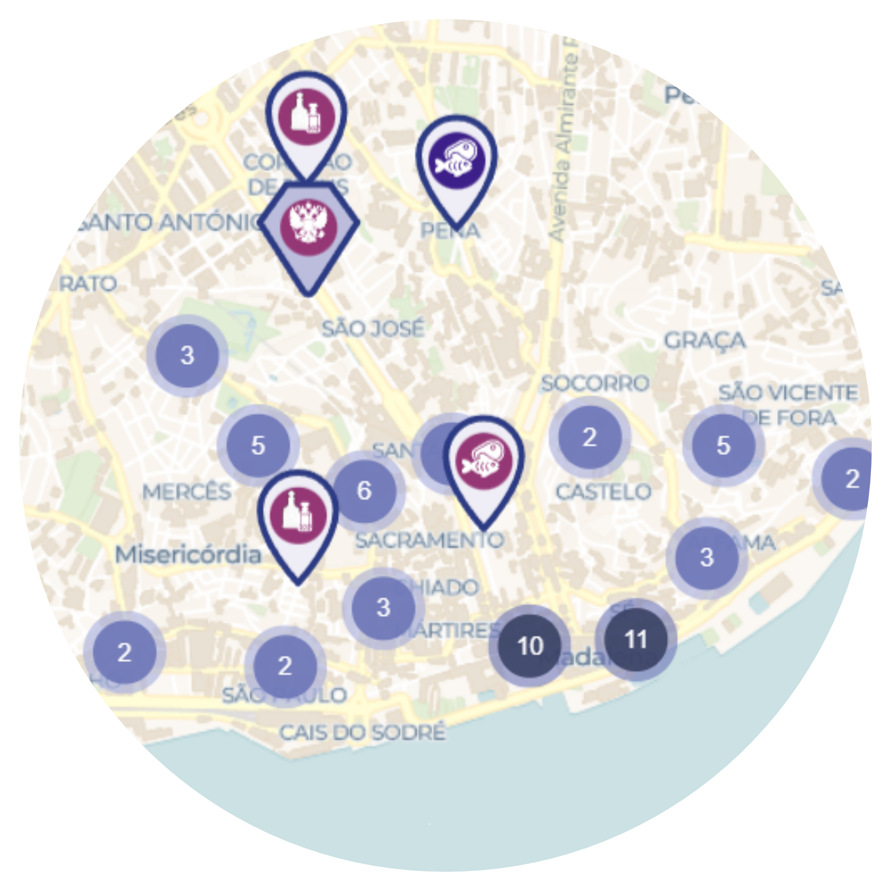

Animais de Lisboa. Outra história da cidade
Explora o Mapa Digital dos espaços e representações dos animais da cidade e põe à prova a tua visão de lince no jogo Tag ANIMALx, identificando os animais presentes no acervo do Museu de Lisboa.